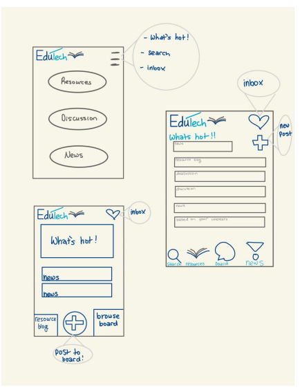
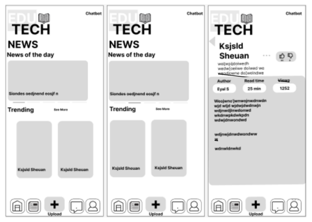
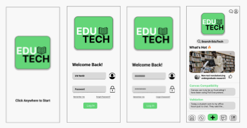
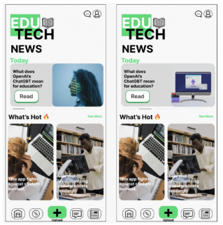

EduTech
Supporting Technology in the Classroom
Technology in classrooms is extremely important as it improves efficiency and the productivity of both students and teachers. Teachers who are not able to use these resources fail to set up their students for success. In the long term, technology in classrooms will be able to increase accessibility, efficiency, and will allow teachers to be adaptable to changes in the classroom.

Problem Space
Our project aims to serve professors at the University of Washington who want to become better at or more familiar with the use of technology in the classroom. Technology allows for better communication between students, TAs, and professors. It also increases efficiency in the classroom. As technology advances, it will have more potential uses in an educational setting. Informing professors about the technology they have available to them will allow them to make more informed decisions on whether to apply these tools into their classrooms. Additionally, new technologies can be difficult to navigate and troubleshoot. Because of this, we believe there is a need for educators to stay updated on new technologies and know their problem-solving resources.
Ideation
Our group brainstormed many ideas on the app we want to develop to help build a platform for professors to interact with each other and help with curriculum and use technology. One of the ideas we had in developing our app was having a chat where professors would be able to chat and reach out to each other to discuss different technological problems. Another feature we discussed was incorporating news about new technology resources and updates. We also wanted there to be a feature that would allow users to see when someone has responded to them, and thought of incorporating an inbox into the platform. Lastly, since AI chatbots are emerging, we discussed implementing a chat bot for professors who may have questions about using other platforms like using canvas and give ideas on what kind of curriculum they can make for their class.
Solution
The app will allow professors to discuss and collaborate with each other to help improve our education system. However, the app is built more for professors who are struggling with adapting with technology and need a guide on how to use it effectively. Users can talk about what they believe is lacking and can help teachers get an idea to improve and implement the appropriate changes to their curriculum.
Iteration
The first piece of feedback that we got was to move the technology resources page from our home screen onto its own page. This would make our home page slightly less cluttered and easier for the user to navigate. Another piece of feedback that we got was to maybe combine the trending search page with the trending news box, to again make our home page seem less cluttered. The final piece of feedback that we received was to combine the viewing and posting features of our upload page for the discussion section. This feedback was very helpful and taught us a lot. It seems like a lot of the fixes that we need to make will help our app flow better, and be easier to use for the reader. We learned that it is better to have more frames and buttons rather than overcrowding one page. The first revision we made was adding in another page on the home screen. We made the technology resources page a button that would take users to a list of different technological resources, rather than having them all on the front page. We also combined the trending search and news boxes, along with the viewing and posting sections of our discussion section.
Reflection
This project allowed me to apply my knowledge in many of the key steps of the user design process, including team collaboration, market research, scoping, ideation, prototyping, evaluation, and iteration.